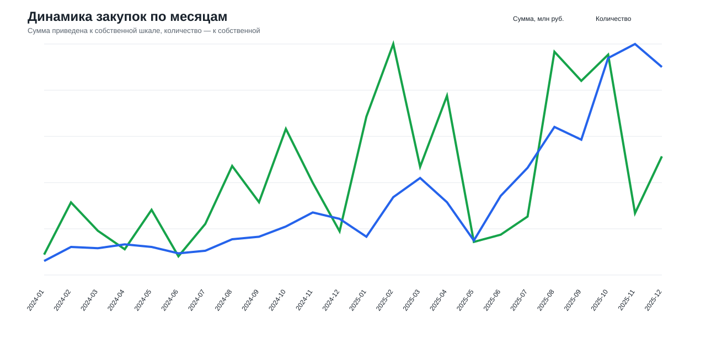
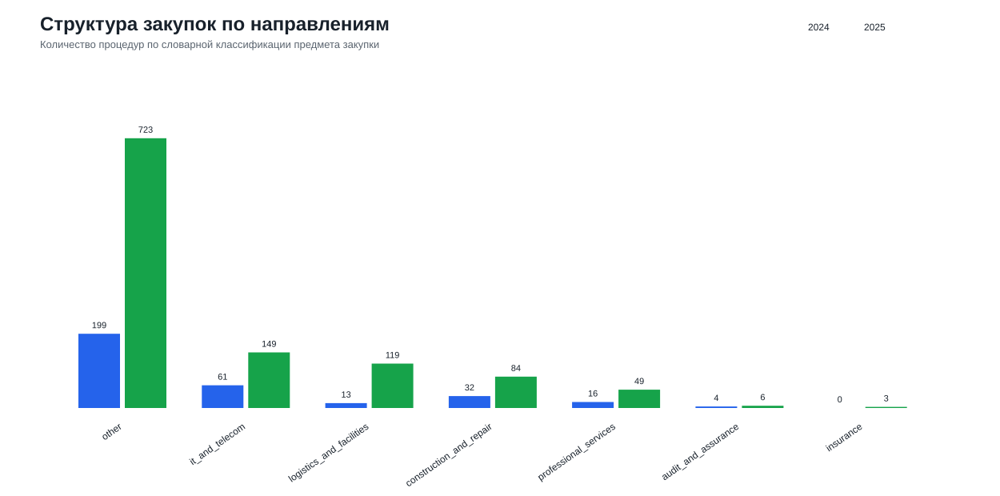
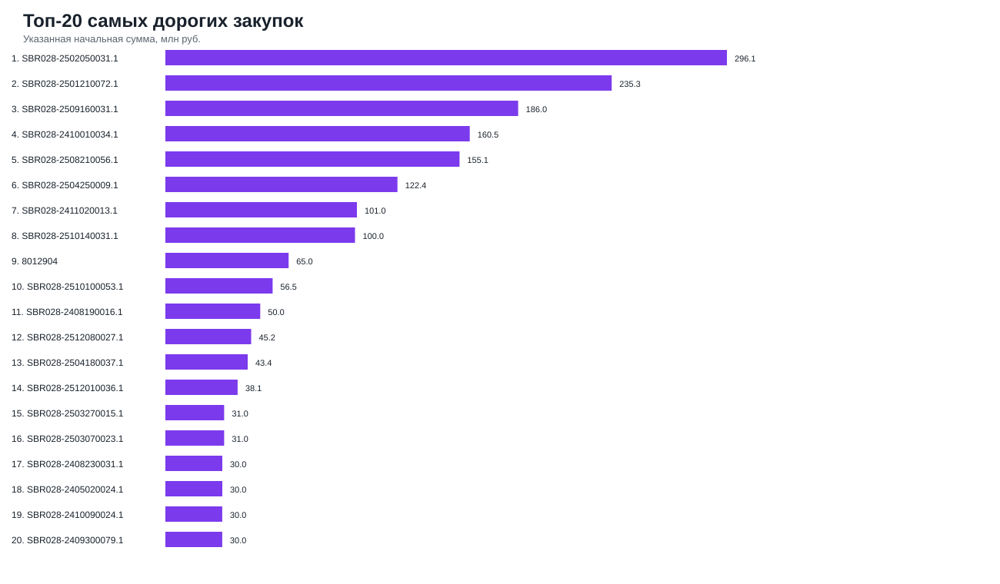
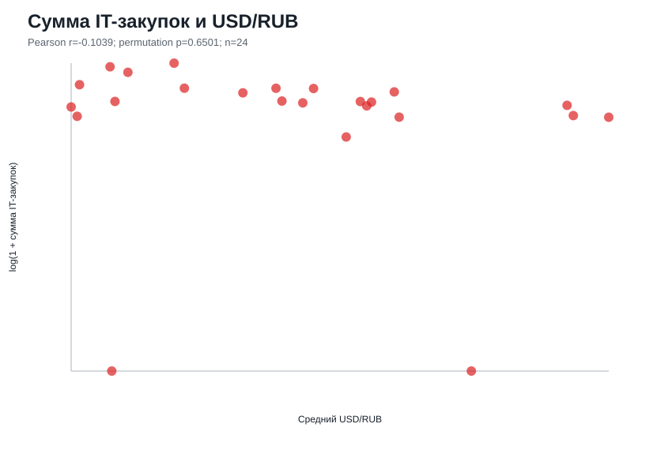
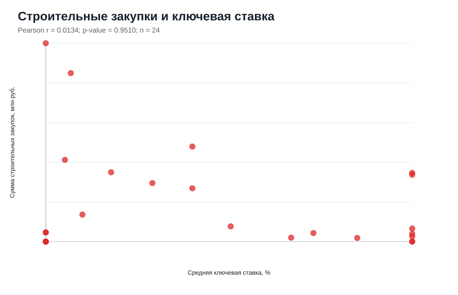
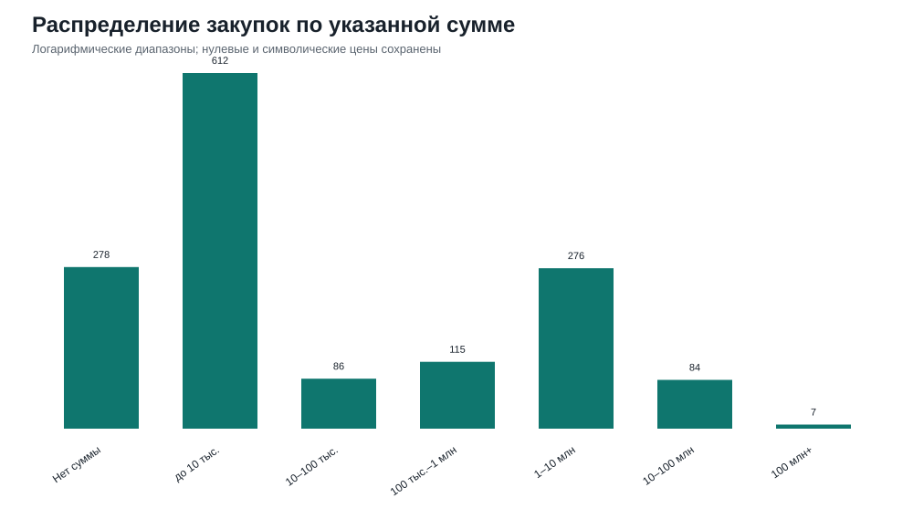
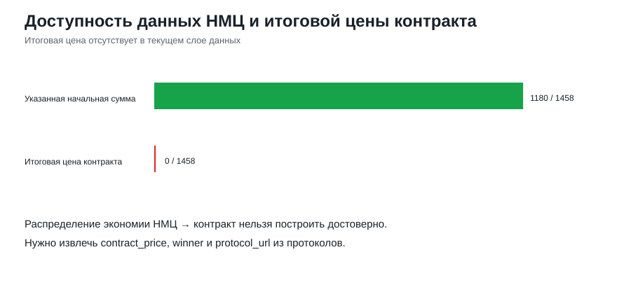
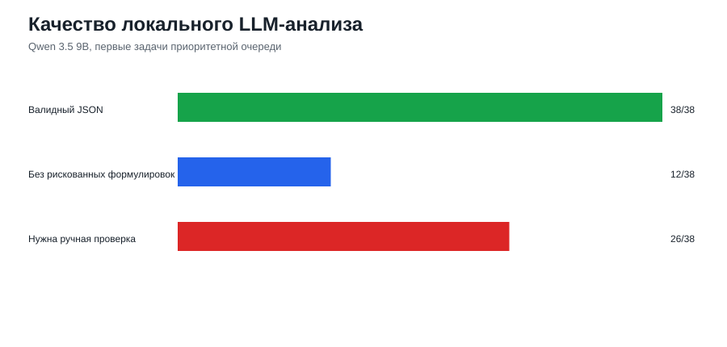

Финальный аналитический отчёт по закупкам группы Сбер за 2024–2025 годы. Графики построены из обработанного слоя данных, выводы даны в формате наблюдение — интерпретация — значимость — ограничение.

Наблюдение: Пик по количеству процедур пришёлся на 2025-11 (181 закупок), а максимальная указанная сумма — на 2025-02 (413.6 млн руб.). В 2025 году публикаций заметно больше, чем в 2024.
Интерпретация: Разрыв между пиком количества и пиком суммы показывает, что динамику формируют два разных эффекта: массовые небольшие публикации и единичные крупные лоты. Рост 2025 года нельзя автоматически трактовать как чистый рост закупочной активности: часть эффекта связана с расширением сбора и лучшим покрытием источников.
Значимость: Для закупочного анализа важно смотреть одновременно на количество, сумму и медиану. Иначе один крупный лот может создать ощущение общего роста, а поток небольших процедур — завысить оценку операционной активности.
Ограничение: Используется дата публикации, а не дата оплаты или исполнения. Итоговая цена контракта в текущем слое данных отсутствует, поэтому анализ построен по указанной начальной сумме.

Наблюдение: IT и телеком выросли с 61 до 149 процедур, а указанная сумма увеличилась на 254.88%. Логистика и эксплуатация дали самый резкий прирост по количеству: с 13 до 119. Строительство выросло по числу процедур, но сумма снизилась на -5.24%.
Интерпретация: Направления ведут себя неодинаково: в IT рост сопровождается ростом суммы, в строительстве рост количества может означать дробление работ или большее число малых процедур, а не рост бюджета. Категория `other` остаётся крупной, потому что часть предметов закупки описана общими формулировками.
Значимость: Выбор ключевого направления для исследования обоснован: IT и телеком достаточно велики по числу и сумме, а также потенциально чувствительны к валютному фактору из-за оборудования, лицензий и импортных компонентов.
Ограничение: Классификация сделана по ключевым словам в названии закупки. Для точной отраслевой структуры нужны ОКПД2, технические задания и нормализация предметов закупки.

Наблюдение: Самая крупная процедура — SBR028-2502050031.1 на 296.1 млн руб. Топ-20 заметно выделяется относительно основной массы закупок.
Интерпретация: Агрегированная сумма чувствительна к небольшому числу крупных процедур. Это особенно важно для сравнения годов: изменение одного-двух лотов может выглядеть как изменение всего направления.
Значимость: Топ-20 нужен как контроль выбросов. Перед управленческим выводом полезно проверять, не держится ли рост суммы на отдельных нетипичных процедурах.
Ограничение: Поле суммы может означать НМЦ, лимит, тариф или единичную ставку. Без документации и итогового контракта нельзя утверждать фактический расход.

Наблюдение: Связь суммы IT-закупок с USD/RUB статистически не подтверждена: r=-0.1039, p=0.6501. Для количества IT-процедур получена отрицательная статистически значимая связь: r=-0.4957, p=0.0135.
Интерпретация: Гипотеза о прямом синхронном росте суммы IT-закупок при росте доллара в этих данных не подтверждается. Отрицательная связь по количеству может отражать сезонность, лаг между планированием и публикацией, смещение состава источников или то, что закупки заранее планируются бюджетными циклами.
Значимость: Результат защищает от слишком простого вывода `доллар вырос — IT-закупки выросли`. В текущей выборке валютный фактор нужно проверять с лагами и детализацией по оборудованию/ПО.
Ограничение: Всего 24 месячных наблюдения. Не проверены лаги, сезонность, типы IT-закупок и доля импортной компоненты.

Наблюдение: Связь суммы строительных закупок с ключевой ставкой незначима: r=0.0134, p=0.9510.
Интерпретация: В пределах 2024–2025 годов закупки строительства, ремонта и эксплуатации сильнее зависят от проектных циклов, бюджета и конкретных объектов, чем от синхронного уровня ставки в месяце публикации.
Значимость: Гипотеза о ставке не подтверждена текущим агрегатом, поэтому её нельзя использовать как объяснение динамики без дополнительных факторов.
Ограничение: Нужны более длинный ряд, лаги, региональность, тип работ, срок исполнения и стоимость финансирования конкретных проектов.

Наблюдение: Сумма отсутствует у 278 процедур. Остальные закупки распределены от символических/малых значений до лотов свыше 100 млн руб.
Интерпретация: В одном поле смешаны разные экономические смыслы: НМЦ, тариф, единичная цена, лимит или пустое значение. Поэтому средняя сумма без сегментации и фильтров может вводить в заблуждение.
Значимость: Перед расчётом средних, темпов роста и корреляций надо явно фиксировать, что анализируется: полная цена лота или только опубликованное числовое поле карточки.
Ограничение: Для нормализации нужны тип цены, единица измерения, объём поставки и документы закупки.

Наблюдение: Начальная сумма доступна у 1180 процедур из 1458 фактических строк, итоговая цена контракта в текущем слое — у 0.
Интерпретация: Поисковые карточки и выгрузки площадок дают хороший слой для анализа публикаций, но не закрывают контрактный слой. Поэтому экономию НМЦ → контракт пока корректно посчитать нельзя.
Значимость: Это честное ограничение проекта: в отчёте показано, где данные уже пригодны для анализа, а где требуется дополнительное извлечение протоколов и контрактов.
Ограничение: Нужно скачать и распарсить протоколы, сведения о победителе, количестве участников и итоговой цене.

Наблюдение: Локальная Qwen через Ollama обработала 38 карточек, все ответы были валидным JSON (100.0%). Покрытие очереди LLM — 8.41%. 26 ответов отмечены как требующие ручной проверки формулировок.
Интерпретация: LLM хорошо справилась со структурированием коротких описаний: привела выводы к единому формату, помогла приоритизировать карточки и сформировать черновики интерпретаций. Но модель иногда использует рискованные слова про поставщика, нарушения или единственного участника там, где во входных данных нет протоколов.
Значимость: Практический результат LLM — не `автоматическое доказательство аномалий`, а ускорение аналитической рутины: черновая разметка, объяснение риска и список карточек для ручной проверки документов.
Ограничение: Обработана только первая часть приоритетной очереди, выборка не случайная. Для финальных выводов по конкуренции нужны протоколы участников, победители и контрактные цены.